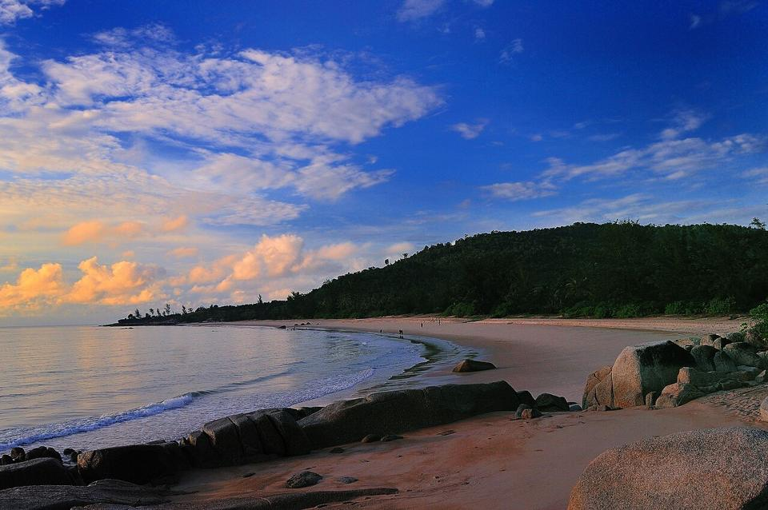
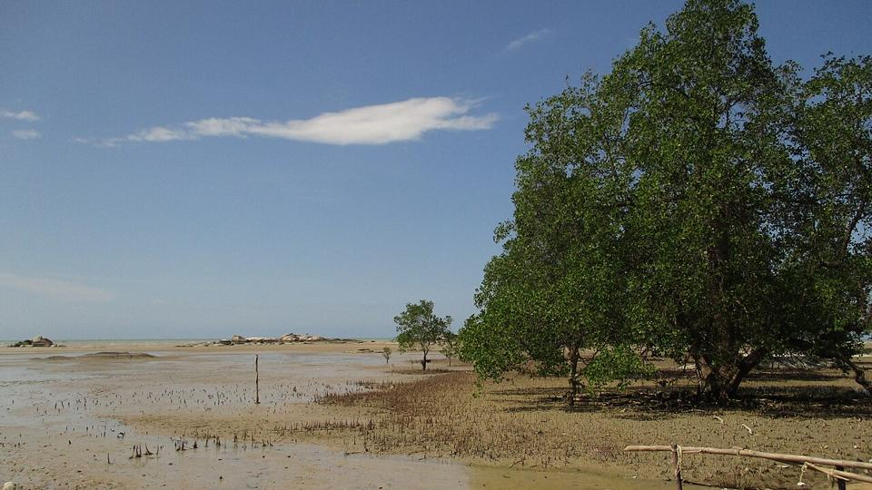
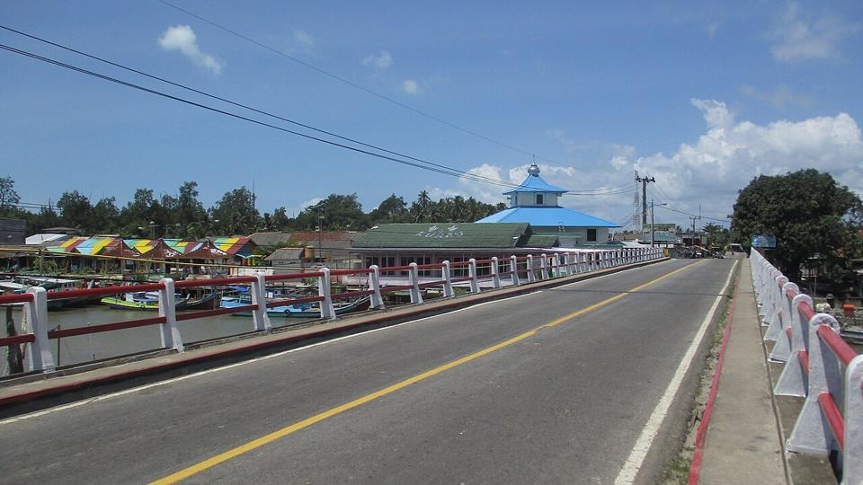
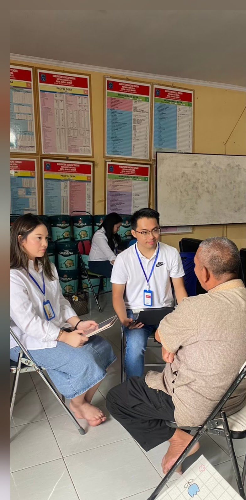
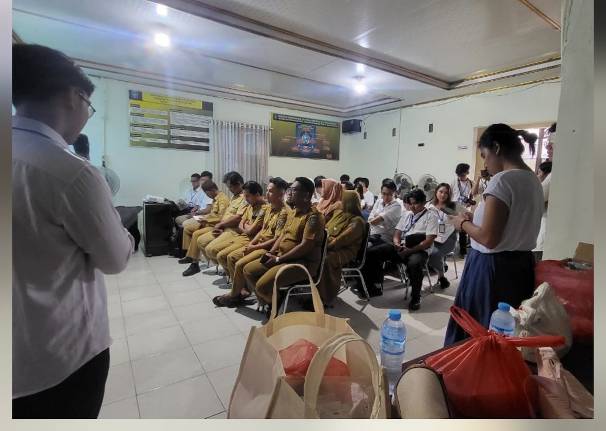

Executive summary
Residents of Kurau Barat and Batu Belubang strongly support tourism, but their support is largely passive. A survey of 193 residents in January 2025 found a mean support score of 4.69 on a five-point scale, while involvement in community decisions scored 2.95 and knowledge of tourism 2.94. The team read this gap as support that rests on hope more than on participation, and that could weaken if the expected benefits do not arrive.
Trust and the environment are more closely tied to support than economic gain. In the full ordered logit model, which covers 177 respondents, views on environmental impact and trust in local government decisions are both significant at the 5 percent level, and community involvement at the 10 percent level. Perceived economic and social impacts are not significant.
The regional data show a transition that is under way but unfinished. Tourism's location quotient in Bangka Belitung rose from 0.734 in 2014 to 0.871 in 2024, still below the value of 1 that marks a base sector, while mining stood at 1.309. Bangka Tengah is one of two districts where tourism is a base sector, yet shift-share analysis suggests that its recent growth owes more to the national trend than to local competitiveness.
But the study covers two villages at one point in time. Its results describe association in those communities and cannot be read as a picture of the province.
Three surveys, three provinces
PENSAR field sites from 2023 to 2025. Each stop opens that year's report.
How the study works
- Two villages are chosenKurau Barat and Batu Belubang, Bangka Tengah
- Residents are surveyed25 enumerator pairs over two days in January 2025
- Local actors are interviewedFish-processing businesses and mangrove tourism managers
- Three levels are combinedRegional data, Sakernas wages, and the village survey
The question
Bangka Belitung needs a new source of growth as its tin runs down. Reserves that carried the provincial economy for decades are projected to thin within one to two decades, and tourism, which the central government has backed by naming the province one of 10 priority destinations, contributed only 6.59 percent of provincial GDP in 2022.
Investment alone will not be enough. Social exchange theory holds that residents support tourism when the benefits they perceive outweigh the costs they bear, and much of the Indonesian evidence comes from mature destinations such as Bali. Far less is known about communities that are moving away from an extractive industry, where the memory of mining shapes how any new sector is judged.
The study asks what determines residents' support for tourism in a post-mining economy, how tourism stands in the regional economy, and how these patterns differ between two villages with contrasting models of tourism.
The place
Bangka is known for the granite boulders on its beaches, a coast lined with mangroves, and fishing villages built along river mouths. Both survey villages lie on the coast of Bangka Tengah, where tin mining and tourism share the same shoreline.



Data and method
The two villages differ by design. Tourism in Kurau Barat grew out of the local fish-processing industry, so most respondents there are women who work in processing centres, whereas Batu Belubang has a more mixed economy of fishers, homestay owners, food sellers, and service workers.
The core of the study is a survey of residents, with 193 observations on the main variables, in which women make up 81 percent of the sample, the average respondent is 40 years old and has lived in the village for 32 years, and 60.8 percent work in tourism or supporting activities. Perception scores are composite indices of questionnaire items, with Cronbach's alpha between 0.602 and 0.735. Support is ordinal, so the study uses an ordered logit model with robust standard errors.
Two wider analyses frame the survey. Location quotients and shift-share analysis of regional GDP, for 2019 to 2024, place tourism in the district economies. An OLS wage regression on 5,651 Sakernas workers tests whether tourism jobs pay more than farm or mining jobs once human capital and demographics are held constant. Interviews then help to explain the numbers.
Most respondents are women of working age with primary schooling
Share of respondents, percent.
Segments too narrow to label: university 6.7 percent and no answer 3.1 percent; other work 4.3 percent and government 3.2 percent.
| Group | Category | Percent |
|---|---|---|
| Sex | Women | 80.8 |
| Men | 19.2 | |
| Age | Under 30 | 28.9 |
| 31 to 45 | 38.1 | |
| 46 to 60 | 24.7 | |
| Over 60 | 8.2 | |
| Education | Primary school | 48.7 |
| Junior secondary | 15.5 | |
| Senior secondary | 25.9 | |
| University | 6.7 | |
| No answer | 3.1 | |
| Work | Tourism and supporting work | 60.8 |
| Homemaker or not working | 31.7 | |
| Other work | 4.3 | |
| Government | 3.2 |
Charts 3 to 6 of the report, page 27. Shares as printed in the report; some rows add to 99.9 because of rounding.
Findings
Support is high and nearly uniform, with a standard deviation of only 0.52 on the five-point scale, and residents also rate tourism's social and environmental effects favourably. Scores fall sharply for the two measures that require people to act or to know something. The report therefore calls this support passive.
Support is high, while involvement and knowledge sit near the midpoint
Mean score on a scale of 1 to 5, 193 respondents.
| Measure | Mean | Std. dev. |
|---|---|---|
| Support for tourism | 4.69 | 0.52 |
| Social impact | 4.22 | 0.59 |
| Environmental impact | 4.06 | 0.67 |
| Economic impact | 3.77 | 0.74 |
| Community involvement | 2.95 | 1.09 |
| Knowledge of tourism | 2.94 | 0.95 |
PENSAR 2025 survey of residents, January 2025. Means rounded from Table 4 of the report.
Trust and the environment stand out
Perceptions of the environment and trust in local government are the clearest correlates of support. Both are significant at the 5 percent level in the full model, with coefficients of 0.721 and 0.549, and community involvement reaches the 10 percent level at 0.378. Economic and social impacts lose significance once controls enter, although their estimates remain positive. Support here looks relational as well as transactional.
Tourism is rising, but few districts rely on it
Tourism gained ground over the decade without yet becoming a base sector for the province. Accommodation and food services, the proxy for tourism, reached a location quotient of 0.871 in 2024, while agriculture stood at 1.616 and mining at 1.309. District figures are more divided. Of the six regencies, only Belitung (1.346) and Bangka Tengah (1.203) have tourism as a base sector, although the city of Pangkal Pinang, which has almost no mining or farming, scores higher still at 1.438. Bangka Tengah is also a mining base, at 1.444.
Bangka Tengah is a base for both tourism and mining
Location quotient of tourism (accommodation and food) and of mining, 2024. A value above 1 marks a base sector.
| Location quotient, 2024 | Tourism | Mining | Agriculture | Manufacturing |
|---|---|---|---|---|
| Bangka | 0.957 | 1.206 | 1.034 | 1.154 |
| Belitung | 1.346 | 0.641 | 1.361 | 0.555 |
| Bangka Barat | 0.446 | 0.965 | 0.695 | 2.304 |
| Bangka Tengah | 1.203 | 1.444 | 0.821 | 0.287 |
| Bangka Selatan | 0.838 | 1.864 | 2.124 | 0.217 |
| Belitung Timur | 0.998 | 1.531 | 1.362 | 0.855 |
| Pangkal Pinang (city) | 1.438 | 0.000 | 0.233 | 0.653 |
| Bangka Belitung province | 0.871 | 1.309 | 1.616 | n/a |
District values compare each district with the province, and provincial values compare the province with Indonesia. n/a: not quoted in the report.
Table 5 of the report, page 33, from regional GDP at constant prices. Provincial values from the text on page 32.
Shift-share results for 2019 to 2024 point the same way. Tourism in Bangka, Bangka Selatan, Belitung Timur, and Pangkal Pinang grew with both the national trend and local competitiveness. In Bangka Tengah, Belitung, and Bangka Barat it grew with the trend alone, and the mining sector of Bangka Tengah lost on both counts.
Tourism in Bangka Tengah grew with the national trend, not with local strength
Shift-share quadrants for three sectors, by district, 2019–2024.
Quadrant I
Tourism: Bangka, Bangka Selatan, Belitung Timur, Pangkal Pinang
No mining or manufacturing
Quadrant II
Tourism: Belitung, Bangka Barat, Bangka Tengah
No mining or manufacturing
Quadrant III
Mining: Bangka, Belitung Timur
Manufacturing: Bangka, Belitung, Bangka Tengah, Bangka Selatan
Quadrant IV
Mining: Belitung, Bangka Tengah, Bangka Barat, Bangka Selatan
Manufacturing: Bangka Barat, Belitung Timur, Pangkal Pinang
Figure 4 of the report, page 34. Rows follow the proportional shift (national growth of the sector) and columns the differential shift (local competitiveness). Tourism is accommodation and food services.
Tourism jobs carry no clear wage premium
Wage data do not yet offer a reason to leave mining or farming for tourism. After controls for human capital and demographics, accommodation and food workers earn no significantly different wage from farm workers (coefficient 0.0415), and the raw premium for mining shrinks to an insignificant 0.0277. Sector explains only 1.7 percent of the variation in wages by itself.
Mining pollutes, yet it can stay
Many respondents hold two views of tin. Of the 93 who answered these questions, 45 agreed that mining has polluted the environment, against 34 who disagreed, and 52 believed that mining and tourism can run side by side, against 35. The report reads this pair of answers as pragmatism in a place where livelihoods have long depended on mining.
Most say tin pollutes, and most also say it can live with tourism
Number of respondents by answer, out of 93 who answered each question.
"The environment is more polluted because of tin mining"
Agree 45 · Disagree 34
"Tin mining and tourism can run side by side"
Agree 52 · Disagree 35
| Answer | Mining pollutes | Can run side by side |
|---|---|---|
| Strongly disagree | 15 | 11 |
| Disagree | 19 | 24 |
| Neutral | 14 | 6 |
| Agree | 29 | 32 |
| Strongly agree | 16 | 20 |
| Total | 93 | 93 |
Charts 7 and 8 of the report, page 28. Questions translated from Indonesian.
From the field
Tourism in Kurau Barat was built from the bottom up. One fish-processing business began in 2016 by turning small fish that had no market into food products, and it now makes 19 of them, while the mangrove area, which the community has guarded since 2004, drew visitors only after it spread on Instagram in 2017.


Tin still weighs on them. Owners told the team that the crisis around the tin corruption case brought layoffs that cut local spending. Other constraints are more ordinary: capital for larger machines, shipping costs from an island, and the difficulty of hiring digital marketers.
"There is plenty of tin in Kurau, yet it feels empty."Mangrove ecotourism manager, Kurau Barat. Translated from Indonesian.
Policy implications
- Turn passive support into ownership. Village planning forums on tourism and revived tourism awareness groups need a clear mandate, with women represented because they are most of the workforce in these businesses. Training should target digital marketing, homestay management, and financial literacy.
- Build trust through environmental commitments. Zoning that separates tourism areas from mining has to be enforced in public view. Spending on waste management and on mangrove and coral restoration would give residents benefits they can see.
- Match strategy to each district. Districts with competitive tourism can focus on service quality and promotion. Districts such as Bangka Tengah need basic infrastructure, access to capital, and stronger local institutions first.
Limitations
The findings do not generalise beyond the two villages, which were chosen for their contrast. The survey is cross-sectional, so it identifies correlation and cannot establish that trust or environmental views cause support. Women are 81 percent of respondents, and some composite indices have a Cronbach's alpha close to the usual threshold of 0.60. Unmeasured factors may also shape support.
My role
I led the PENSAR 2025 research team in Bangka Belitung as vice manager of Kanopi's research division. PENSAR is the society's yearly field study, and members travel outside Greater Jakarta to collect primary data. The report is team work by the research division, and this page is my own summary of it.
How to cite
Research Division, Kanopi FEB UI. (2025). Unveiling Local Support: Determinants of Community Support for Tourism in Bangka Island. Penelitian Besar 2025. Faculty of Economics and Business, Universitas Indonesia.
Download the report (PDF, 52 pages, 19 MB, in Indonesian)